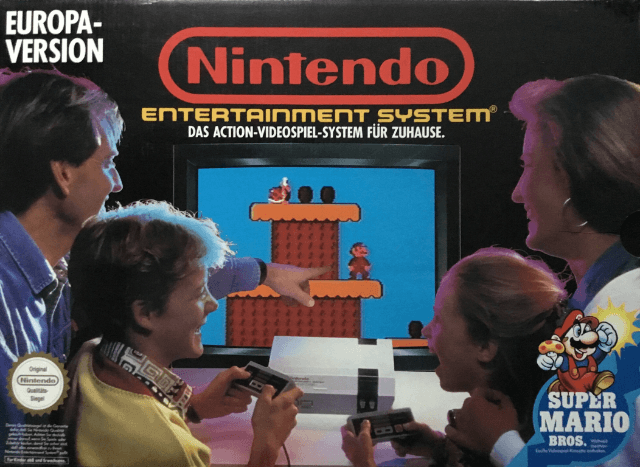
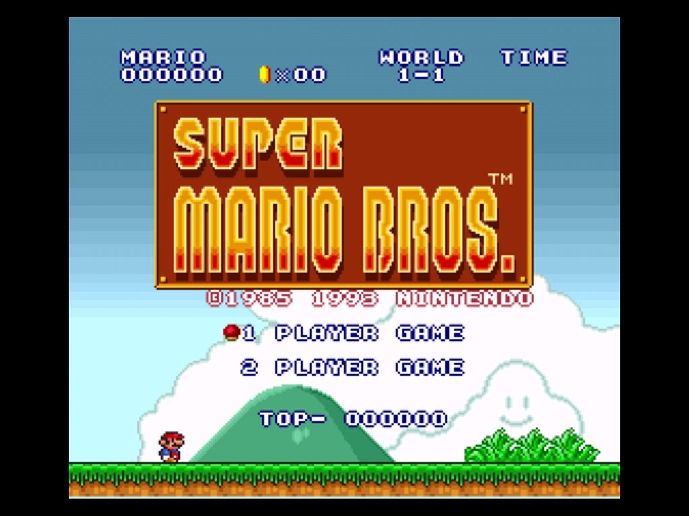
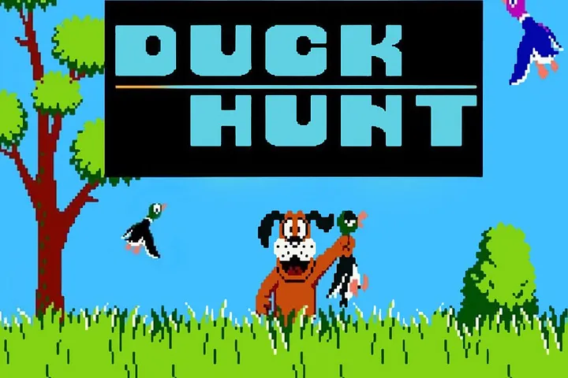
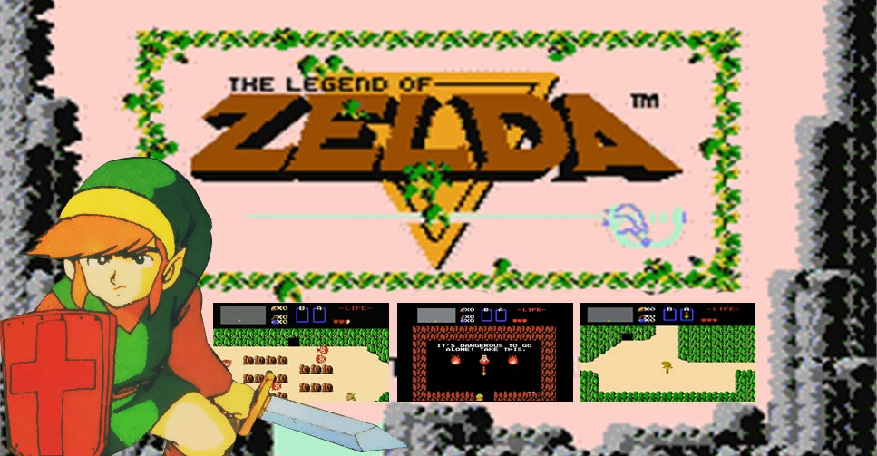

Retro Gamer Cave
NES(Nintendo Entertainment System)
O console mais popular de sua geração
Empresa fabricante:Nintendo
Desenvolvido por:Masayuki Uemura
Ano de lancamento:1985

O NES foi um console de videogame de 8 bits lançado pela Nintendo em 1985 na América do Norte, Europa, Austrália e Brasil. O console era uma versão redesenhada do Famicom (Family Computer), que havia sido lançado no Japão em 1983.Foi o console mais popular da terceira geração de videogames, vendendo mais de 60 milhões de unidades em todo o mundo. O "Nintendinho" foi também responsável por revitalizar a indústria de videogames após a crise de 1983, introduzindo jogos de alta qualidade e personagens icônicos

O NES também foi o primeiro console a ter um sistema de licenciamento para os jogos de terceiros, o que garantiu um controle de qualidade e uma variedade de títulos. O console teve mais de 700 jogos oficiais, além de muitos clones e piratas como o dynavision II da empresa dynacon.O NES foi o primeiro console a investir em periféricos tais como R.O.B,a arma Zapper e a Power Glove.
TOP 3 JOGOS DO NES
- SUPER MARIO BROS(1985): Um jogo de plataforma para um ou dois jogadores, que era baseado no sucesso dos arcades. O jogador controlava o encanador Mario, que devia resgatar a princesa Peach das garras do vilão Bowser. Super Mario Bros.Embora o primeiro jogo da franquia só tenha sido lançado oficialmente em 1985, o personagem surgiu em 1981, introduzido em Donkey Kong Consistindo em um jogo de plataforma arcade, o título mostrava um macaco jogando barris para todos os lados e os jogadores precisavam se articular para encontrar um Jumpman que poderia controlá-lo o Jumpman surgia como uma espécie de agente para controlar a fúria do grande macaco.

- DUCK HUNT(1984):Um jogo de tiro para um ou dois jogadores, que usava uma pistola de luz para acertar os patos que voavam na tela. O jogo também tinha um modo alternativo, em que o jogador atirava em discos de argila.A premissa era bizarramente simples,os patos apareciam na tela e você devia tentar atirar neles antes que fossem embora.Acertando todos,você ia para a próxima fase,com mais patos, mais padrões de voo e mais velocidade.Errando, um cachorro irritante aparecia na tela tirando o sarro da sua “incompetência”. E o mais legal é que isso era feito com uma arminha de brinquedo que você apontava para a tela e atirava!

- THE LEGEND OF ZELDA(1986):O primeiro jogo da série The Legend of Zelda e é muito mais do que a simples história de um garoto com roupa verde que empunha uma espada e enfrenta vilões, mas sim um mito que mudou drasticamente toda a indústria dos videogames criando um gênero e abrindo o caminho para outros jogos que se inspiraram nessa obra de arte. O jogo foi concebido pela lenda dos videogames Shigeru Miyamoto. A história do guerreiro Link, da princesa Zelda e do vilão Ganon já teve vários capítulos, mas tudo começou no início da era dos consoles caseiros. The Legend of Zelda foi revolucionário, pois foi um dos primeiros jogos com mundo aberto a chegar aos consoles caseiros, pois antes disso somente os jogos feitos para computadores tinham realizado essa façanha. Originalmente o jogo estava sendo concebido como uma série de Dungeons para o jogador explorar e resolver os enigmas propostos. Contudo,Miyamoto resolveu modificar a exploração e deixou o jogo da maneira que o conhecemos.
